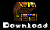
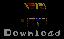

ここではSample Action Gameのプログラムファイルの配布を行います。


Sample Action Gameは、
- フリーウェアとなります。
- 著作権放棄はしません。著作権はにあります。
- 【新バージョン (Rust版)】MITライセンスにて配布します。ライセンスの全文はアーカイブ内のLICENSEフォルダを参照してください。
- 【旧バージョン (Java版)】アーカイブを改変しない限り転載、再配布自由となります。
- 無保証となります。つきましてはプログラムの実行は必ず自己責任でお願いします。
本ゲームのプレーによる不具合についていかなる責任も負わないものとします。
となり、以下のファイルをダウンロードした場合は、上記条件に対して無条件に同意したものとさせていただきます。
【新バージョン (Rust版)】
※新バージョンはRustアプリケーションにて作成されています。Javaの実行環境は必要ありません。
プレー環境は以下となります。
- Windows版 : Windows 10 / 11 (64ビット)
キーボードのほか、ゲームパッド (Xbox系・PlayStation系など) でも遊べます。
起動方法はアーカイブを展開して、中の実行ファイル(Windows版はaction_game.exe、Linux版はaction_game)を起動します。
遊び方はアーカイブ内のPlayingManual.html (このサイトのPlaying manualと同じ内容) を参照してください。
Ver.02 [2026/11/21]
Windows版
Windows版

- 旧バージョン(Java版) Ver.01.06をRust言語に移植しました。
- BGMが鳴るようになりました。
- ゲームパッドで遊べるようになりました。
【旧バージョン (Java版)】
※旧バージョンはJavaアプリケーションにて作成されています。
プレー環境は『Java 2 Platform, Standard Edition 5.0 (J2SE 5.0)(Java 1.5.0_xx)』～ 8までのVMが実行できる環境が必要となります。
【注意！】Java SE 9より、アーキテクチャーが大きく変わり、プログラムが実行できない状態になりました。
Ver.01.06 [2008/07/19]
- Windows上の実行において、SE音発声時に処理が一瞬停止する現象を措置しました。
- タイトルバーにバージョンを表示するようにしました。
Ver.01.05 [2007/05/21]


- BGMにステージクリア、死亡音、ゲームオーバーを載せました。これに伴い、起動パラメータ bgm_external のデフォルト値を 0 (内部読み込み) としました。
Ver.01.04 [2007/02/19]
- ゲーム中のスクロール処理の仕様を改良しました。
- 一部難易度を下げました。
- 一部ゲーム中のヒント表現を変えました。
Ver.01.03 [2007/01/25]
- ゲーム中のローマ数字の表記に一部誤りがあったのを修正しました。
Ver.01.02 [2006/12/18]
- 一部のステージの背景と表現を改良しました(プレー的には何も変更ありません)。
Ver.01.01 [2006/12/07]
- デフォルトのスクリーンサイズ倍率を2倍としました。
- 起動時において標準出力に開始時間、リソース読み込み完了時にその経過時間を表示するようにしました。
Ver.01.00 [2006/11]
- 初回リリース